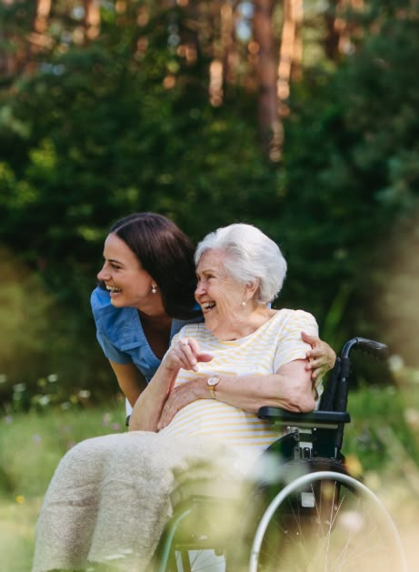
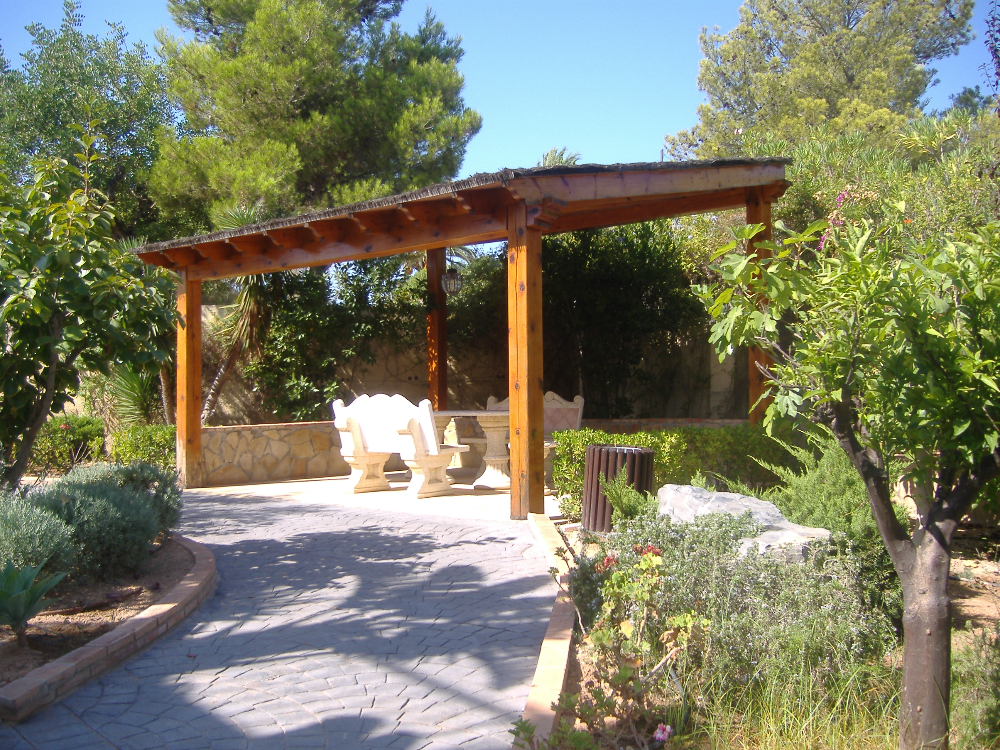
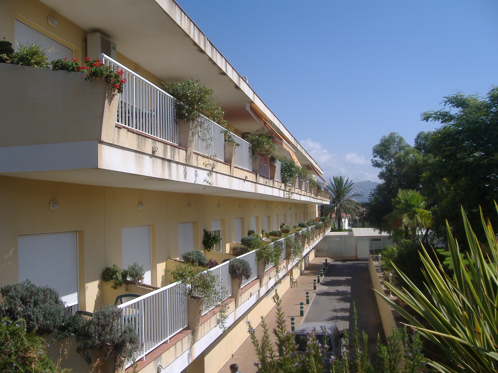
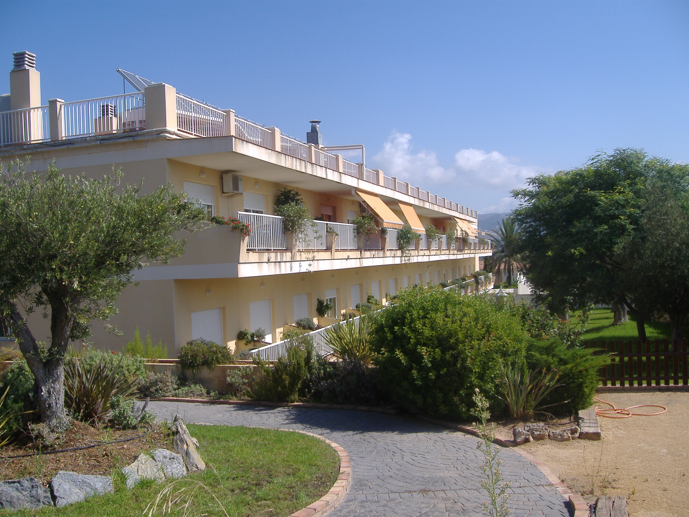
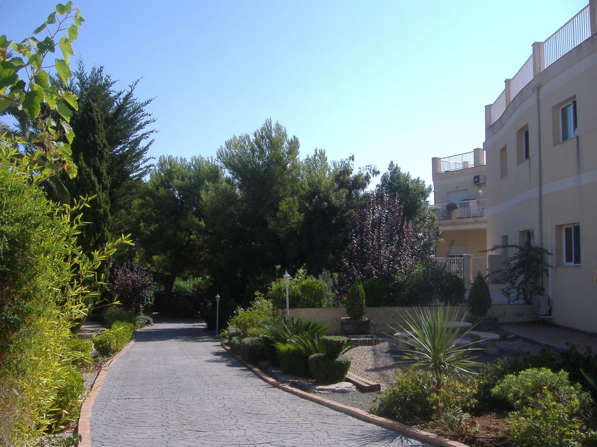
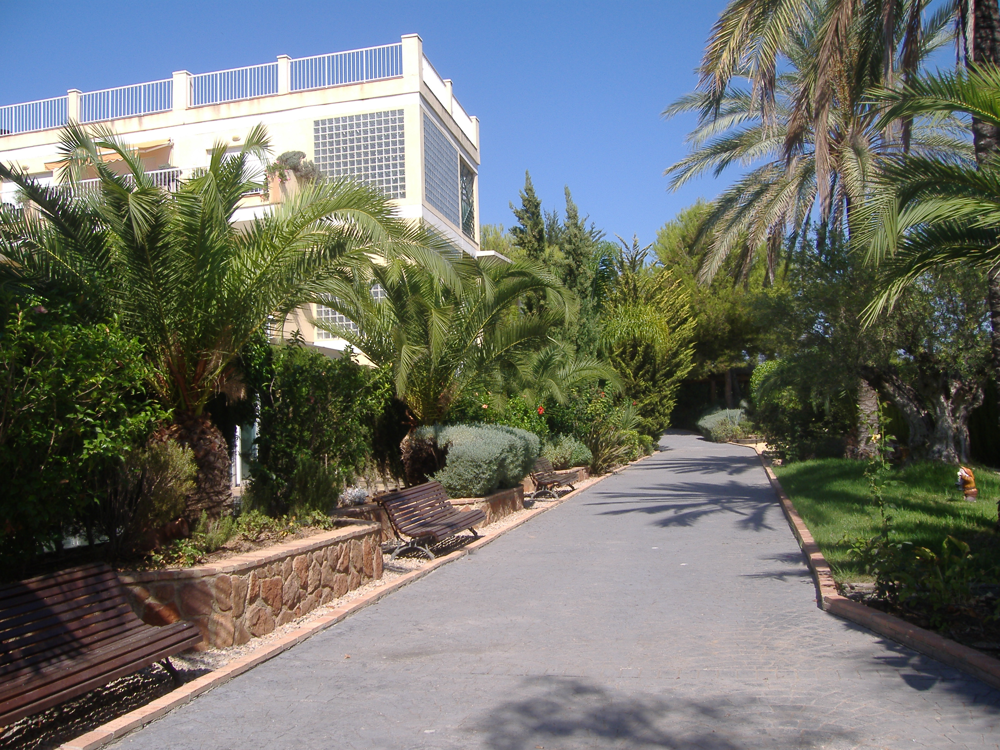

⌂
Residencia
Información sobre la vida en el centro, la atención y las posibilidades de estancia. Contacta con nosotros para conocer disponibilidad y detalles.
 VILLA DE ALTEA LES BOQUERES
VILLA DE ALTEA LES BOQUERESEn Villa de Altea – Les Boqueres queremos estar cerca de las personas mayores y de sus familias, ofreciendo un espacio de atención, convivencia y bienestar en Altea.
Contactar con el centro
Somos una residencia de tercera edad y centro de día situada en Altea. Queremos que las familias encuentren aquí un punto de contacto cercano para conocer el centro, resolver dudas y recibir información sobre nuestros servicios.
La atención personal, el respeto y la comunicación con las familias forman parte de nuestra manera de entender el cuidado.
Un entorno exterior cuidado, con jardines, paseos y rincones para disfrutar del aire libre.





Dos modalidades para conocer nuestro centro y consultar qué opción puede encajar mejor con las necesidades de cada persona y su familia.
Información sobre la vida en el centro, la atención y las posibilidades de estancia. Contacta con nosotros para conocer disponibilidad y detalles.
Un recurso de atención diurna. Nuestro equipo puede explicarte el funcionamiento, horarios y condiciones del servicio.
Compartimos con las familias información sobre menús, actividades y momentos del día a día del centro.
Queremos facilitar la comunicación con las familias y mantenerlas conectadas con el día a día del centro. Disponemos de canales para compartir información, fotografías, actividades y realizar videollamadas organizadas con recepción.
Estamos disponibles para resolver tus dudas y concertar una visita al centro.
Horario de atención y visitas:
De 10:00 a 14:00 h
Si necesitas información sobre la residencia o el centro de día, estaremos encantados de atenderte.
Teléfono
966 88 17 91
Correo electrónico
info@lesboqueres.com
Atención y visitas
10:00 – 14:00 h